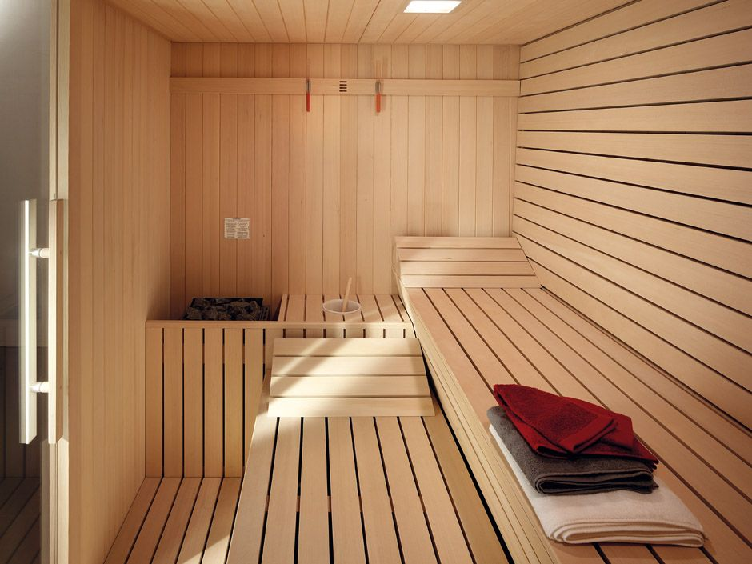
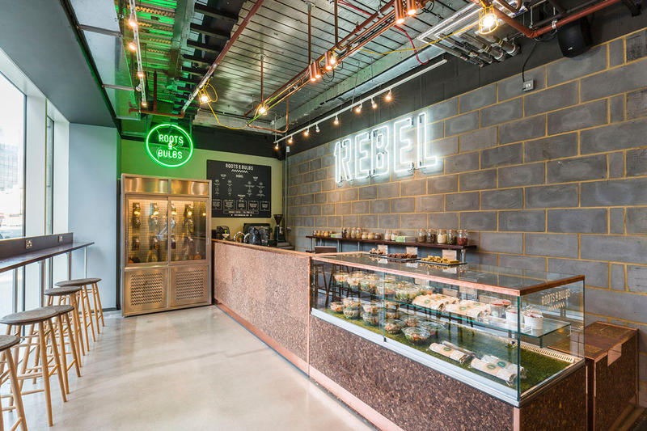

AMENITIES
Our state of the art sauna and steam room, provide our members with the ultimate recovery. Our members who have regularly used our sauna have noticed an improvement in their overall health, wellness, and performance. Other benefits include flushing toxins, improving heart health, relieving stress, and aiding in overall recovery.

"You can't outwork a bad diet." "Abs are made in the kitchen." "You are what you eat." Whatever the saying is, nutrition is the baseline of fitness and overall health. Our cafe provides members with post-workout protein shakes and nutritious to-go meals for optimal recovery. We prioritize your health and well-being, and that begins in the kitchen!
